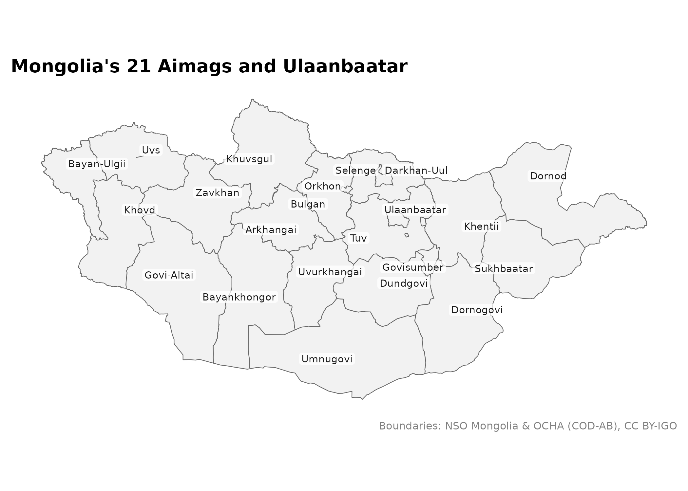
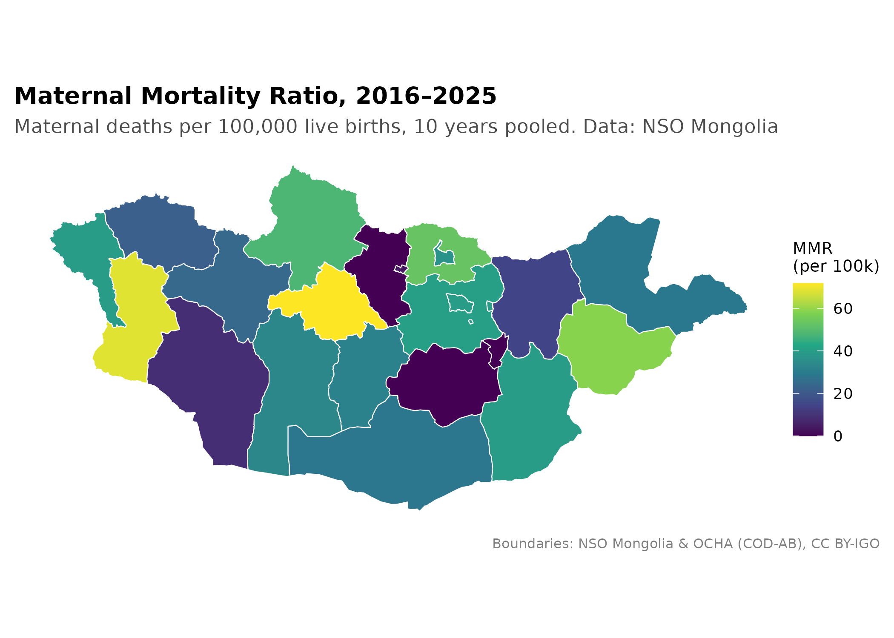
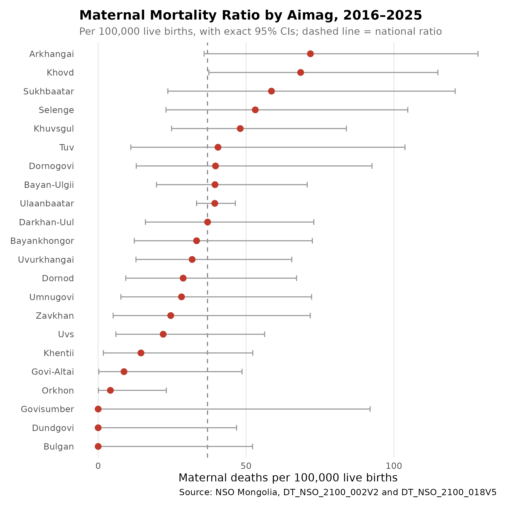
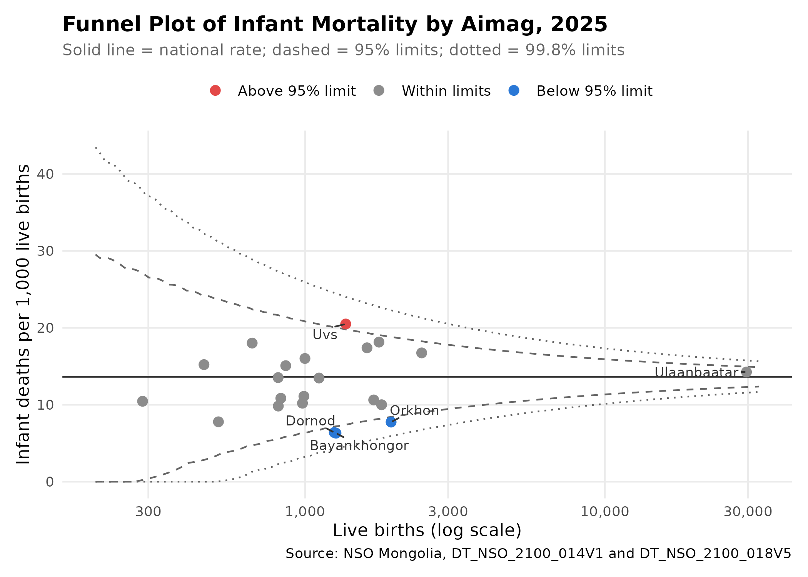
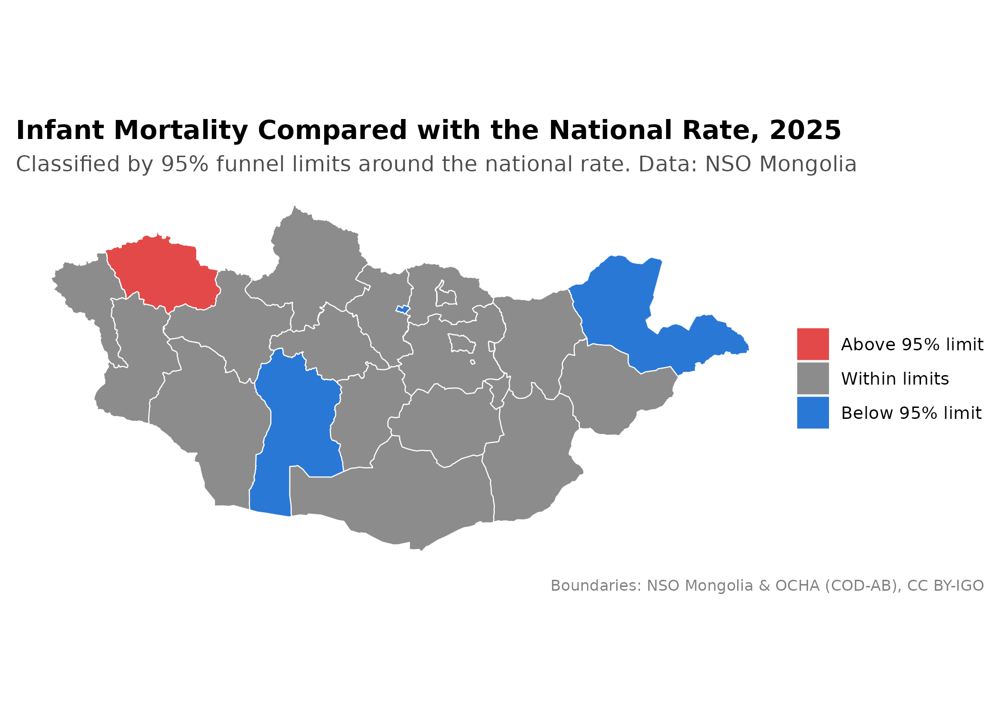

library(mongolstats)
library(mongolmaps)
library(dplyr)
library(ggplot2)
nso_options(mongolstats.lang = "en")
# Global theme with proper margins to prevent text cutoff
theme_set(
theme_minimal(base_size = 11) +
theme(
plot.margin = margin(10, 10, 10, 10),
plot.title = element_text(size = 13, face = "bold"),
plot.subtitle = element_text(size = 10, color = "grey40"),
legend.text = element_text(size = 9),
legend.title = element_text(size = 10)
)
)Overview
Geographic analysis helps find health disparities and target interventions. This guide maps two aimag-level indicators, maternal and infant mortality, and shows the steps that keep such maps honest: checking the counts, pooling small numbers, showing uncertainty, and comparing areas with a funnel plot rather than fixed colour bands.
Getting Boundary Data
mongolmaps ships boundaries for every administrative level. Each unit carries its NSO code, so tables from mongolstats join by code rather than by name.
aimags <- mn_aimags() # 21 aimags and Ulaanbaatar
aimags |>
sf::st_drop_geometry() |>
select(name, nso_code, iso_code, area_km2) |>
head()
#> # A tibble: 6 × 4
#> name nso_code iso_code area_km2
#> <chr> <chr> <chr> <dbl>
#> 1 Ulaanbaatar 511 MN-1 4736.
#> 2 Dornod 421 MN-061 123523.
#> 3 Sukhbaatar 422 MN-051 82321.
#> 4 Khentii 423 MN-039 80743.
#> 5 Tuv 341 MN-047 73986.
#> 6 Govisumber 342 MN-064 5540.
mn_map(aimags, label = TRUE, title = "Mongolia's 21 Aimags and Ulaanbaatar")
Other levels work the same way: mn_regions(),
mn_soums(), mn_ub_districts() and
mn_khoroos(). (mongolstats also has
mn_boundaries(), which downloads geoBoundaries polygons,
and name-based joins, mn_join_by_name() and
mn_fuzzy_join_by_name(), for data that have no NSO
codes.)
Region codes in NSO tables
NSO’s Region dimension mixes levels: "0" is
the national total, "1"–"4" are the four
economic regions, "5" is Ulaanbaatar as a region, and
three-digit codes are aimags. mn_join() keeps the aimag
level and drops the rest. One quirk matters for the monthly health
tables: they store Ulaanbaatar’s figures under the region code
"5" and leave its aimag-level code "511"
empty. Recode "5" to "511" before joining so
the capital is not left blank.
Case Study: Maternal Mortality
Maternal deaths are rare: Mongolia records a few dozen a year, and most aimags record none in a typical year. A single year’s maternal mortality ratio (MMR) by aimag is therefore mostly noise. We pool 10 years of counts and attach confidence intervals.
Check the counts before mapping
Aimag codes start with their region’s digit (1xx =
Western, 2xx = Khangai, 3xx = Central,
4xx = Eastern), so aimag counts should add up to their
regional subtotal. Checking this catches data entry errors before they
reach a map.
# Rows where the aimag counts do not add up to the regional subtotal
subtotal_mismatches <- function(data) {
aimag_sums <- data |>
filter(nchar(Region) == 3, Region != "511") |>
mutate(region = substr(Region, 1, 1)) |>
summarise(aimag_sum = sum(value, na.rm = TRUE), .by = c(region, period))
region_totals <- data |>
filter(Region %in% c("1", "2", "3", "4")) |>
select(region = Region, period, region_total = value)
inner_join(aimag_sums, region_totals, by = join_by(region, period)) |>
filter(aimag_sum != region_total)
}
# Annual maternal deaths by aimag
annual_tbl <- "DT_NSO_2100_002V1"
maternal_annual <- nso_data(
annual_tbl,
selections = list(
Region = nso_dim_values(annual_tbl, "Region")$code,
Year = nso_dim_values(annual_tbl, "Year")$code
),
labels = "en"
) |>
mutate(period = Year_en)
# Monthly maternal deaths by aimag
monthly_tbl <- "DT_NSO_2100_002V2"
maternal_monthly <- nso_data(
monthly_tbl,
selections = list(
Region = nso_dim_values(monthly_tbl, "Region")$code,
Month = nso_dim_values(monthly_tbl, "Month")$code
),
labels = "en"
) |>
mutate(period = Month_en)
subtotal_mismatches(maternal_annual)
#> # A tibble: 1 × 4
#> region period aimag_sum region_total
#> <chr> <chr> <dbl> <dbl>
#> 1 4 2017 22 2
subtotal_mismatches(maternal_monthly)
#> # A tibble: 0 × 4
#> # ℹ 4 variables: region <chr>, period <chr>, aimag_sum <dbl>,
#> # region_total <dbl>The annual table has 1 region-year(s) where the aimags do not add up to their region; the monthly table has 0. An aimag count larger than its whole region’s total is an entry error, and pooled over 10 years it would make that aimag look like a hot spot. We use the monthly table, which adds up, and report any mismatch to NSO.
Pooled maternal mortality ratio
The MMR divides maternal deaths by live births
(DT_NSO_2100_018V5), both summed over the same 10 complete
years:
# Sum a monthly count table over whole years, by region code. Blank cells
# are counted as zero and reported in `n_blank` (see below).
pooled_counts <- function(tbl, years) {
months <- nso_dim_values(tbl, "Month", labels = "en")
nso_data(
tbl,
selections = list(
Region = nso_dim_values(tbl, "Region")$code,
Month = months$code[substr(months$label_en, 1, 4) %in% years]
),
labels = "en"
) |>
filter(Region != "511") |> # empty duplicate of Ulaanbaatar
summarise(
count = sum(value, na.rm = TRUE),
n_blank = sum(is.na(value)),
n_cells = n(),
.by = c(Region, Region_en)
)
}
# The 10 most recent years with all 12 months published
month_labels <- nso_dim_values(monthly_tbl, "Month", labels = "en")$label_en
complete_years <- names(which(table(substr(month_labels, 1, 4)) == 12))
mmr_years <- tail(sort(complete_years), 10)
mmr_period <- paste0(min(mmr_years), "–", max(mmr_years))
maternal_deaths <- pooled_counts(monthly_tbl, mmr_years)
live_births <- pooled_counts("DT_NSO_2100_018V5", mmr_years)
mmr <- maternal_deaths |>
select(Region, Region_en, deaths = count) |>
inner_join(select(live_births, Region, births = count), by = join_by(Region)) |>
mutate(
Region_en = trimws(Region_en),
mmr = deaths / births * 1e5,
# Exact Poisson 95% confidence interval
lower = qchisq(0.025, 2 * deaths) / 2 / births * 1e5,
upper = qchisq(0.975, 2 * (deaths + 1)) / 2 / births * 1e5
)
national_mmr <- mmr |> filter(Region == "0")
# Aimags and the capital only
mmr_units <- mmr |>
filter(nchar(Region) == 3 | Region == "5") |>
mutate(Region = if_else(Region == "5", "511", Region))
mmr_units |>
arrange(desc(mmr)) |>
select(Region_en, deaths, births, mmr, lower, upper) |>
head(10)
#> # A tibble: 10 × 6
#> Region_en deaths births mmr lower upper
#> <chr> <dbl> <dbl> <dbl> <dbl> <dbl>
#> 1 Arkhangai 11 15327 71.8 35.8 128.
#> 2 Khovd 14 20452 68.5 37.4 115.
#> 3 Sukhbaatar 7 11948 58.6 23.6 121.
#> 4 Selenge 8 15059 53.1 22.9 105.
#> 5 Khuvsgul 12 24983 48.0 24.8 83.9
#> 6 Tuv 4 9873 40.5 11.0 104.
#> 7 Dornogovi 5 12603 39.7 12.9 92.6
#> 8 Bayan-Ulgii 11 27847 39.5 19.7 70.7
#> 9 Ulaanbaatar 145 367781 39.4 33.3 46.4
#> 10 Darkhan-Uul 8 21621 37.0 16.0 72.9NSO leaves some cells blank rather than entering 0 (296 of 3240
region-months here). Counting blanks as zero is safe for this table: the
monthly sums reproduce the national annual totals in
DT_NSO_2100_002V1. Check this for any table before you
treat blanks as zero.
Over 2016–2025, the national MMR was 37 per 100,000 live births (258 maternal deaths). 12 of the 22 areas (21 aimags and the capital) recorded 5 or fewer maternal deaths in 10 years.
Choropleth and confidence intervals
mmr_map <- mn_join(mmr_units, by = "Region", level = "aimag")
mn_map(mmr_map, fill = mmr, title = paste0("Maternal Mortality Ratio, ", mmr_period)) +
labs(
subtitle = "Maternal deaths per 100,000 live births, 10 years pooled. Data: NSO Mongolia",
fill = "MMR\n(per 100k)"
)
A map shows point estimates only. The interval plot shows how uncertain each one is:
mmr_units |>
mutate(Region_en = forcats::fct_reorder(Region_en, mmr)) |>
ggplot(aes(x = mmr, y = Region_en)) +
geom_vline(xintercept = national_mmr$mmr, linetype = "dashed", color = "grey50") +
geom_errorbar(aes(xmin = lower, xmax = upper), width = 0.3, color = "grey60", orientation = "y") +
geom_point(color = "#c0392b", size = 2.5) +
labs(
title = paste0("Maternal Mortality Ratio by Aimag, ", mmr_period),
subtitle = "Per 100,000 live births, with exact 95% CIs; dashed line = national ratio",
x = "Maternal deaths per 100,000 live births",
y = NULL,
caption = "Source: NSO Mongolia, DT_NSO_2100_002V2 and DT_NSO_2100_018V5"
) +
theme(panel.grid.major.y = element_blank(), panel.grid.minor = element_blank())
Even with 10 years pooled, most intervals overlap the national ratio. An aimag with no maternal deaths has an estimate of 0 but an upper limit well above zero; it is not evidence of zero risk. The pooled period also includes 2021, when maternal deaths rose sharply during the COVID-19 pandemic.
Case Study: Infant Mortality
Funnel plot
Ranking aimags or colouring them by fixed cut-offs (for example, “IMR above 20”) treats a rate from 300 births the same as one from 30,000. A funnel plot sets each aimag’s rate against its number of births and adds control limits around the national rate. The limits are wide for small aimags and narrow for large ones. Points outside the limits differ from the national rate by more than chance alone would explain.
# Latest year with all 12 months published
imr_year <- max(complete_years)
infant_deaths <- pooled_counts("DT_NSO_2100_014V1", imr_year)
imr_births <- pooled_counts("DT_NSO_2100_018V5", imr_year)
imr <- infant_deaths |>
select(Region, Region_en, deaths = count) |>
inner_join(select(imr_births, Region, births = count), by = join_by(Region)) |>
mutate(Region_en = trimws(Region_en), imr = deaths / births * 1000)
national_rate <- with(filter(imr, Region == "0"), deaths / births) # per live birth
# Poisson control limits around the national rate, for any number of births.
# Spiegelhalter's interpolation smooths the steps of the discrete Poisson
# quantiles (Spiegelhalter 2005, Statistics in Medicine 24:1185-1202).
funnel_limit <- function(births, p) {
lambda <- births * national_rate
r <- qpois(p, lambda)
alpha <- (ppois(r, lambda) - p) / dpois(r, lambda)
pmax(r - alpha, 0) / births * 1000
}
imr_units <- imr |>
filter(nchar(Region) == 3 | Region == "5") |>
mutate(
Region = if_else(Region == "5", "511", Region),
signal = case_when(
imr > funnel_limit(births, 0.975) ~ "Above 95% limit",
imr < funnel_limit(births, 0.025) ~ "Below 95% limit",
.default = "Within limits"
),
signal = factor(signal, levels = c("Above 95% limit", "Within limits", "Below 95% limit"))
)
count(imr_units, signal)
#> # A tibble: 3 × 2
#> signal n
#> <fct> <int>
#> 1 Above 95% limit 1
#> 2 Within limits 18
#> 3 Below 95% limit 3
funnel <- tibble::tibble(births = exp(seq(log(200), log(max(imr_units$births) * 1.1), length.out = 300))) |>
mutate(
lower_998 = funnel_limit(births, 0.001), upper_998 = funnel_limit(births, 0.999),
lower_95 = funnel_limit(births, 0.025), upper_95 = funnel_limit(births, 0.975)
)
signal_colors <- c("Above 95% limit" = "#e34948", "Within limits" = "grey55", "Below 95% limit" = "#2a78d6")
ggplot(imr_units, aes(x = births, y = imr)) +
geom_line(data = funnel, aes(y = upper_998), linetype = "dotted", color = "grey40") +
geom_line(data = funnel, aes(y = lower_998), linetype = "dotted", color = "grey40") +
geom_line(data = funnel, aes(y = upper_95), linetype = "dashed", color = "grey40") +
geom_line(data = funnel, aes(y = lower_95), linetype = "dashed", color = "grey40") +
geom_hline(yintercept = national_rate * 1000, color = "grey20") +
geom_point(aes(color = signal), size = 2.5) +
ggrepel::geom_text_repel(
data = filter(imr_units, signal != "Within limits" | Region == "511"),
aes(label = Region_en), size = 3, color = "grey20", min.segment.length = 0, seed = 1
) +
scale_x_log10(labels = scales::label_comma()) +
scale_y_continuous(limits = c(0, NA)) +
scale_color_manual(values = signal_colors, name = NULL) +
labs(
title = paste0("Funnel Plot of Infant Mortality by Aimag, ", imr_year),
subtitle = "Solid line = national rate; dashed = 95% limits; dotted = 99.8% limits",
x = "Live births (log scale)",
y = "Infant deaths per 1,000 live births",
caption = "Source: NSO Mongolia, DT_NSO_2100_014V1 and DT_NSO_2100_018V5"
) +
theme(legend.position = "top", panel.grid.minor = element_blank())
Mapping the signals
imr_map <- mn_join(imr_units, by = "Region", level = "aimag")
mn_map(imr_map, fill = signal, title = paste0("Infant Mortality Compared with the National Rate, ", imr_year)) +
scale_fill_manual(values = signal_colors, na.value = "grey90", name = NULL) +
labs(subtitle = "Classified by 95% funnel limits around the national rate. Data: NSO Mongolia")
With 22 units, about one would fall outside 95% limits by chance alone, so treat a single point just past the 95% limit with caution; the 99.8% limits are a stricter screen. A signal is a reason to look closer, for example at data quality, referral patterns, or access to care, not proof that care is worse. Infant deaths and births are counted where they are recorded, so referrals of high-risk births to Ulaanbaatar can raise the capital’s rate and lower the rate of the aimag the mother came from.
Tips for Spatial Epidemiology
- Check the counts first: Make sure aimags add up to regional and national totals before you pool or map.
- Build rates from counts: Sum numerators and denominators over the period, then divide. Do not average monthly or annual rates.
- Pool rare events: Combine several years for rare outcomes such as maternal deaths.
- Show uncertainty: Pair every choropleth with confidence intervals or a funnel plot.
- Compare against chance, not fixed cut-offs: Funnel plots account for different population sizes; fixed colour bands do not.
-
Join by code:
mongolmaps::mn_join()matches NSORegioncodes, so spelling differences cannot drop an aimag from the map.
Next Steps
- Discover Health Data: Return to the Discovery Guide
- Learn More: Explore all functions in the Reference